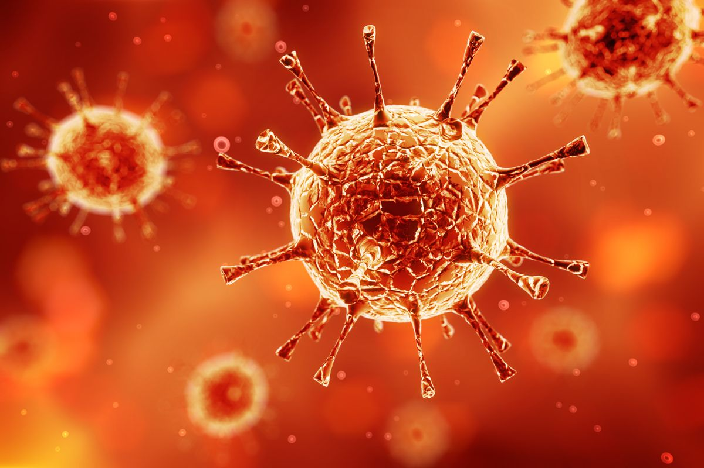
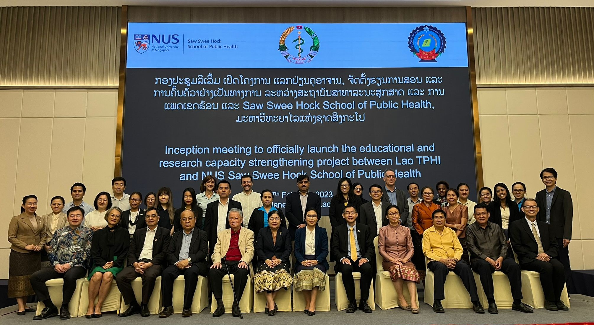

About Us
Welcome to the Faculty of Public Health at the National University of Singapore, where we are committed to improving health and well-being for communities worldwide. Our faculty combines rigorous academic programs with practical experience, equipping students with the knowledge and skills to tackle pressing public health challenges. We emphasize interdisciplinary collaboration, research innovation, and community engagement, fostering a holistic understanding of health determinants. With a diverse array of courses and research initiatives, we empower our students to become leaders in public health, ready to create sustainable solutions for a healthier future. Join us as we strive to advance public health knowledge and promote health equity on a global scale!
Programmes
NUS Cancer Research & Prevetion Program |
Envoirment, Climate & Health Program |

NUS Infectious Diseases Research Program |

NUS Public Health Genomics Program |

Join us
Are you ready to make a meaningful impact on global health? Join the Faculty of Public Health at the National University of Singapore! Our vibrant community offers an exceptional education that combines theoretical knowledge with practical experience, preparing you to address the complex challenges facing public health today. With access to leading experts, innovative research opportunities, and a diverse curriculum, you'll develop the skills necessary to drive positive change in communities around the world. Whether your passion lies in health policy, epidemiology, or community engagement, NUS Public Health provides the platform to help you achieve your goals. Come be a part of our mission to enhance health equity and improve well-being for all!